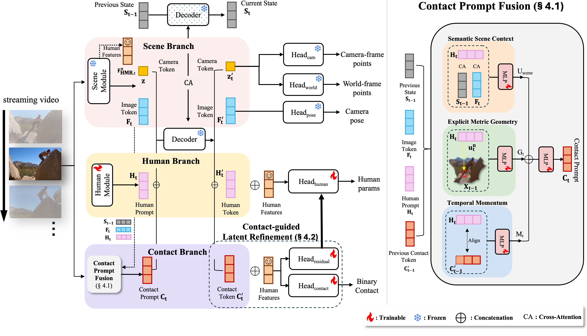
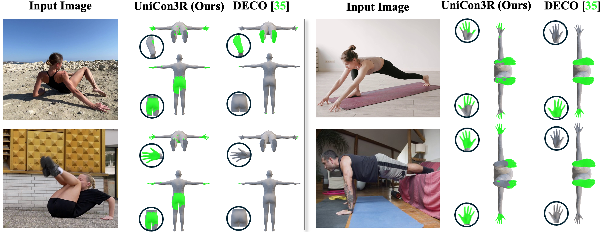
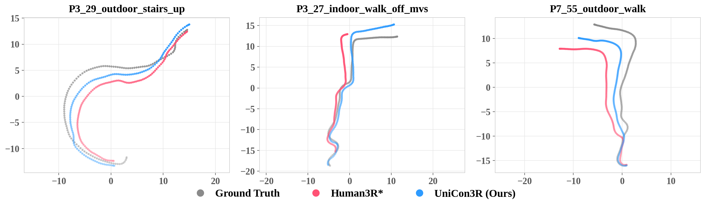
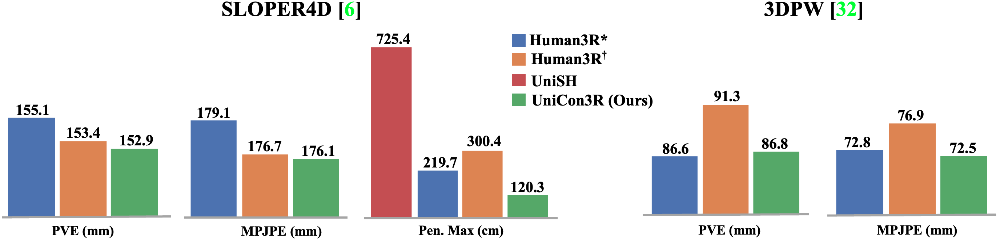
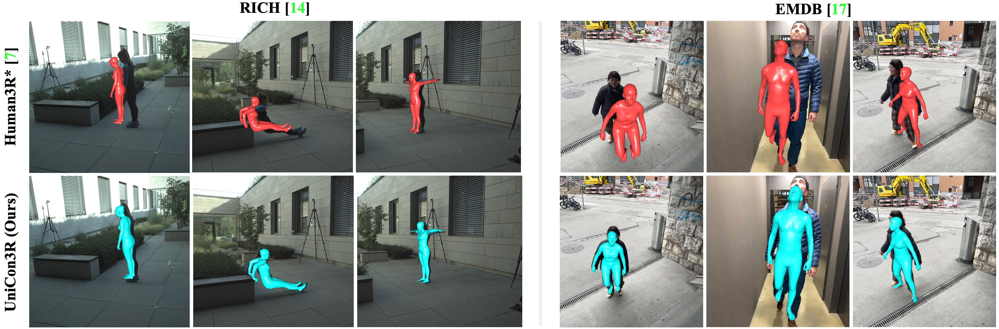

[Paper Soon] [arXiv Soon] [Code Soon]
The black frustum is the current input camera and updates per frame without accumulating previous poses. Contact points are rendered at size 0.008.
We introduce UniCon3R (Unified Contact-aware 3D Reconstruction), a unified feed-forward framework for online human-scene 4D reconstruction from monocular videos. Recent advances in feed-forward methods enable real-time world-coordinate human motion and scene reconstruction. However, these often produce spatially misaligned outputs, leading to physically implausible artefacts such as bodies floating above the ground or penetrating solid objects. The key reason is that existing approaches fail to model the physical interaction between the human and the environment. To address this, we explicitly model interaction by inferring 3D contact from human pose and scene geometry and use it as a corrective constraint before generating the final pose. This enables UniCon3R to jointly recover high-fidelity scene geometry and spatially aligned 3D humans within the scene. Experiments on standard human-centric video benchmarks such as RICH, EMDB, 3DPW and SLOPER4D show that UniCon3R outperforms strong baselines across physical plausibility, global human motion estimation and local human mesh recovery while maintaining real-time online inference.

UniCon3R extends Human3R with two tightly coupled mechanisms. First, a scene-aware contact prompt fuses current-frame scene features, recurrent scene memory, local metric geometry, and temporal contact history to build a physically meaningful interaction token. Second, contact-guided latent refinement feeds the refined contact token back into the human branch before SMPL-X regression, turning contact from an auxiliary readout into an internal corrective prior.
The result is a unified recurrent reconstruction pipeline that preserves feed-forward efficiency while producing more physically grounded human motion and better body-scene alignment.
UniCon3R predicts dense per-vertex contact probabilities and uses them internally to refine the human reconstruction rather than treating contact as a detached side output.

Qualitative contact comparison against DECO on in-the-wild web videos. Contact vertices are shown in green on the mesh surface.
On EMDB-2, UniCon3R improves world-aligned trajectory quality and reduces drift relative to Human3R while preserving a unified streaming pipeline.

UniCon3R preserves competitive local mesh accuracy on SLOPER4D and 3DPW while substantially reducing maximum scene penetration on SLOPER4D.

UniCon3R produces local body pose and scene alignment closer to ground truth, especially in examples where body-scene support is visually clear.

Human3R* denotes the released checkpoint evaluated in our pipeline, and
Human3R† is the controlled fine-tuning baseline.
| Method | Scene | Contact | RICH | EMDB-2 | ||||||
|---|---|---|---|---|---|---|---|---|---|---|
| WA-MPJPE | W-MPJPE | RTE (%) | PA-MPJPE | WA-MPJPE | W-MPJPE | RTE (%) | PA-MPJPE | |||
| JOSH3R | ✓ | ✗ | 190.4 | 334.9 | 6.3 | — | 220.0 | 661.7 | 13.1 | — |
| UniSH | ✓ | ✓ | 118.1 | 183.2 | 4.8 | — | 118.5 | 270.1 | 5.8 | — |
| Human3R* | ✓ | ✗ | 109.9 | 184.0 | 3.3 | 48.6 | 118.2 | 286.1 | 2.4 | 38.7 |
| Human3R† | ✓ | ✗ | 97.5 | 153.2 | 2.3 | 41.4 | 156.7 | 378.6 | 3.5 | 40.6 |
| Parallel Readout (Ours) | ✓ | ✓ | 97.9 | 153.5 | 2.3 | 41.5 | 160.7 | 388.3 | 3.6 | 50.9 |
| UniCon3R (Ours) | ✓ | ✓ | 81.5 | 129.8 | 1.7 | 37.6 | 113.7 | 285.6 | 2.3 | 38.2 |
PVE and MPJPE are in mm; Pen. Max is in cm. Missing entries indicate that the metric is not reported for the method.
| Method | SLOPER4D | 3DPW | |||
|---|---|---|---|---|---|
| PVE (mm) | MPJPE (mm) | Pen. Max (cm) | PVE (mm) | MPJPE (mm) | |
| Human3R* | 155.1 | 179.1 | 219.7 | 86.6 | 72.8 |
| Human3R† | 153.4 | 176.7 | 300.4 | 91.3 | 76.9 |
| UniSH | — | — | 725.4 | — | — |
| UniCon3R (Ours) | 152.9 | 176.1 | 120.3 | 86.8 | 72.5 |
| Method | Precision | Recall | F1 | Geo. |
|---|---|---|---|---|
| DECO | 0.71 | 0.76 | 0.70 | 17.92 |
| InteractVLM | 0.63 | 0.63 | 0.60 | 15.70 |
| Human3R* | 0.07 | 0.13 | 0.08 | 76.10 |
| Parallel Readout (Ours) | 0.59 | 0.72 | 0.62 | 20.68 |
| UniCon3R (Ours) | 0.64 | 0.80 | 0.71 | 14.98 |
| Method | Coll. | Pen. | Float | P.Max |
|---|---|---|---|---|
| UniSH | 7.39 | 6.01 | 37.94 | 67.87 |
| Human3R* | 7.40 | 6.40 | 33.56 | 216.97 |
| Human3R† | 7.72 | 7.69 | 37.52 | 259.54 |
| Parallel Readout (Ours) | 7.71 | 7.56 | 37.05 | 254.91 |
| UniCon3R (Ours) | 5.54 | 1.59 | 5.50 | 17.54 |
| Model Variant | Architectural Components | Global Motion | Physical Plausibility | |||||
|---|---|---|---|---|---|---|---|---|
| Context | Geometry | Momentum | Latent Ref. | WA-MPJPE | W-MPJPE | Foot Sliding | Jitter | |
| Human3R* | — | — | — | — | 97.5 | 153.2 | 37.7 | 279.5 |
| Parallel Readout | ✗ | ✗ | ✗ | ✗ | 90.2 | 142.7 | 35.3 | 262.5 |
| + Scene Context | ✓ | ✗ | ✗ | ✗ | 89.4 | 140.6 | 35.0 | 260.1 |
| + Explicit Geometry | ✓ | ✓ | ✗ | ✗ | 85.9 | 134.5 | 33.1 | 244.6 |
| + Temporal Momentum | ✓ | ✓ | ✓ | ✗ | 85.3 | 135.1 | 32.0 | 231.8 |
| + Latent Refinement (UniCon3R) | ✓ | ✓ | ✓ | ✓ | 81.5 | 129.8 | 31.5 | 221.4 |
| Method | FPS |
|---|---|
| UniSH | 2.6 |
| Human3R* | 2.4 |
| UniCon3R (Ours) | 2.4 |
| Method | Seconds |
|---|---|
| DECO | 1.1 |
| InteractVLM | 3.5 |
| UniCon3R (Ours) | 0.5 |